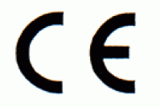

Gehörschützer unterliegen dem Geräte- und Produktsicherheitsgesetz. Sie müssen die sicherheitstechnischen Anforderungen nach DIN EN 352 "Gehörschützer– Allgemeine Anforderungen" erfüllen. Die Prüfung erstreckt sich unter anderem auf die Funktionssicherheit und ein Mindestmaß an Tragekomfort. Geprüfte Gehörschützer sind am CE- Zeichen zuerkennen.

Abb. 13 CE- Zeichen